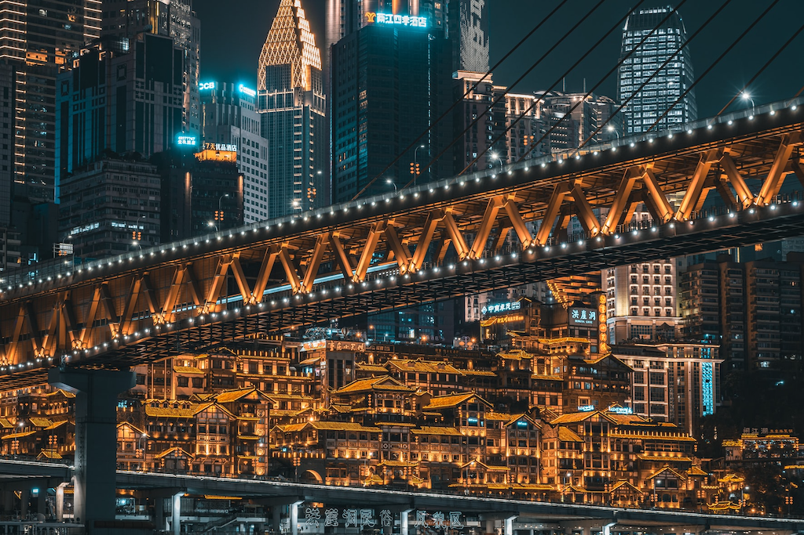
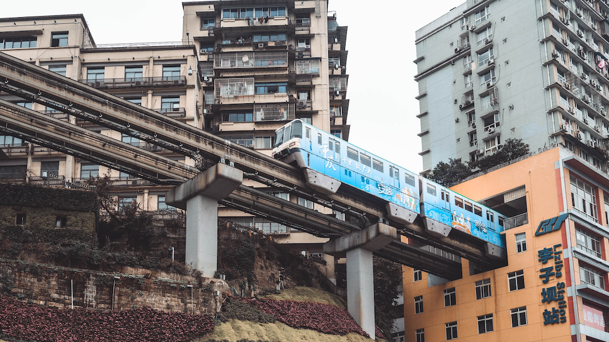
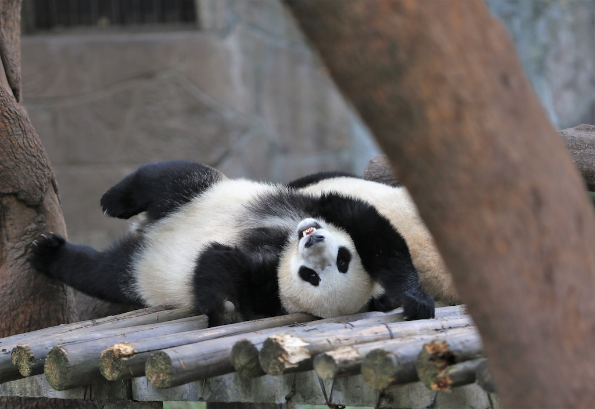

Sightseeing
Come to visit!
Hongyadong
As a modern landmark of Chongqing, Hongyadong is impressive with its fabulous appearance. Nevertheless, you should not miss the incredible selection of souvenir shops, food stalls and really high-class restaurants in there. Visiting Hongyadong restaurant, especially at night when the bright light come on and offers a beautiful view of the Jialing River.
Liziba Station
Liziba is a station on Line 2 of Chongqing Rail Transit in Chongqing municipality, China. It is located in the Yuzhong District. It opened in 2004. The station is located on the sixth to eighth floor of a 19-story residential building. It uses specialized noise reduction equipment to isolate station noise from the surrounding residences.
Chongqing Art Museum

Chongqing Art Museum (Chinese: 重庆美术馆) (also known as Chongqing Art Gallery or Chongqing Guotai Arts Center) is an art museum in Yuzhong District of Chongqing.[2] Its main focus is on traditional Chinese painting, printmaking, and small sculptures.
Chongqing Zoo
The zoo is located at Yangjiaping on Xijiao Road in the Jiulongpo District of Chongqing. It was built in 1953 and officially opened to the public in 1955. The zoo covers an area of 45 hectares (111 acres). The zoo is an important base for the protection of and research on wild animals. It exhibits rare species including giant pandas, red pandas, the very rare South China tiger and white tiger, and the African elephant.